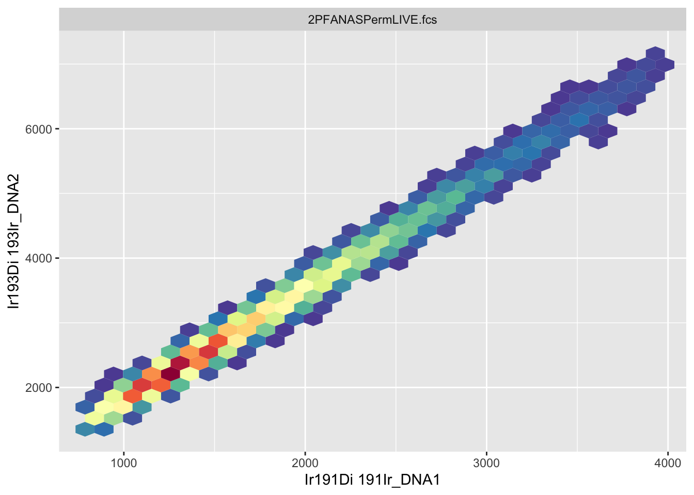
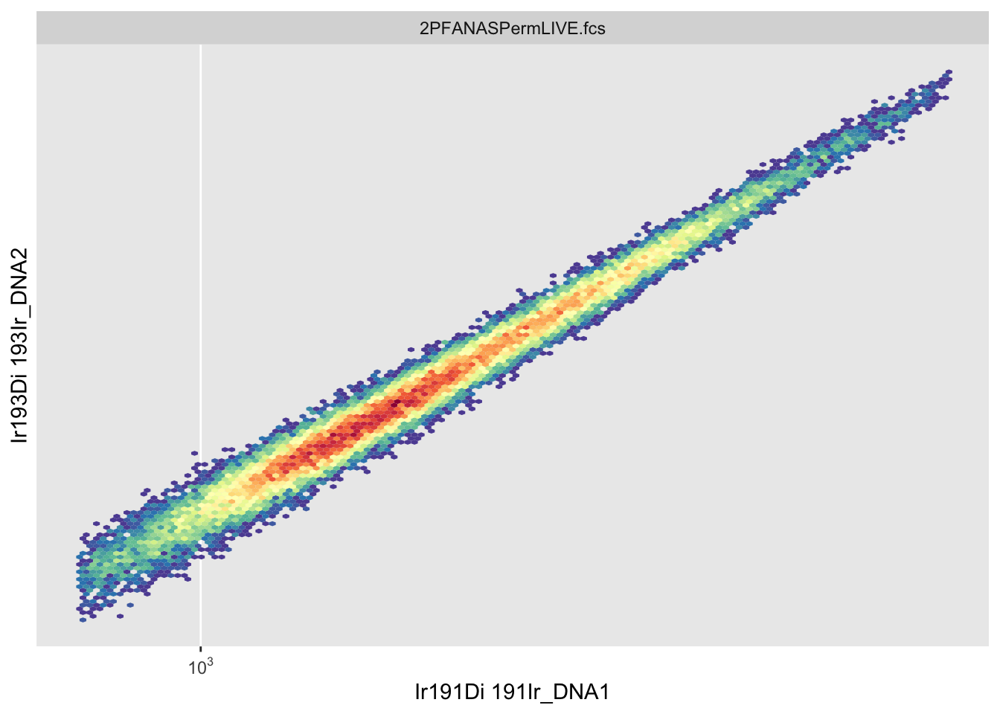
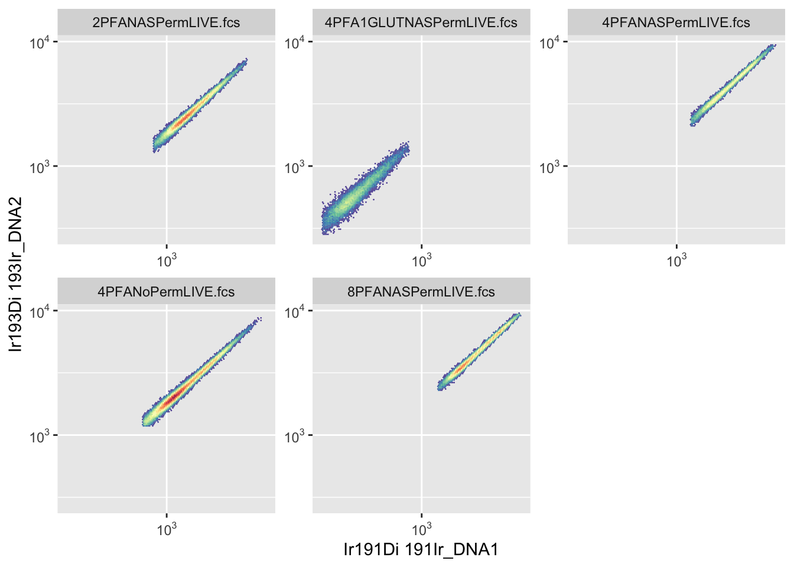

7 Chapter 6 - Visualising Cytometry Data
7.1 What You’ll Learn
Cytometry data lives in high-dimensional space - dozens of markers measured simultaneously on each cell. Visualisation helps us see patterns, identify populations, and verify our analysis at every step. This chapter teaches you to create the plots you’ll need throughout the course.
7.2 Understanding Cytometry Visualisation
Traditional cytometry analysis relies heavily on visual inspection. We look at scatter plots to: - Identify cell populations - Set gates - Verify data quality - Compare samples - Present results
In R, we use the ggcyto package, which combines:
- flowCore: Cytometry data structures
- ggplot2: R’s powerful plotting system
7.3 The Essentials
7.3.1 Step 1: Load Required Packages
library(flowCore)
library(ggcyto)
#> Loading required package: ggplot2
#> Loading required package: ncdfFlow
#> Loading required package: BH
#> Loading required package: flowWorkspace
#> As part of improvements to flowWorkspace, some behavior of
#> GatingSet objects has changed. For details, please read the section
#> titled "The cytoframe and cytoset classes" in the package vignette:
#>
#> vignette("flowWorkspace-Introduction", "flowWorkspace")
library(here)
#> Warning in readLines(f, n): line 1 appears to contain an
#> embedded nul
#> here() starts at /Volumes/T31/CLAUDE/Analysing-Cytometry-Data-With-R7.3.3 Step 3: Your First Cytometry Plot
autoplot(FLOWSET[[1]], x = "Ir191Di", y = "Ir193Di")
This creates a basic scatter plot showing DNA markers (Ir191 and Ir193) for the first sample.
What you should see: A scatter plot with most events clustered together, some spread along the axes.
7.3.4 Step 4: Improve the Visualisation
The default plot compresses data onto the axes. Transform it for better visibility:
autoplot(FLOWSET[[1]], x = "Ir191Di", y = "Ir193Di", bins = 128) +
scale_x_flowCore_fasinh() +
scale_y_flowCore_fasinh()
What changed: - Data spreads out from the axes - Populations become visible - Colours show density
7.3.5 Step 5: Plot Multiple Samples
autoplot(FLOWSET, x = "Ir191Di", y = "Ir193Di", bins = 128) +
scale_x_flowCore_fasinh() +
scale_y_flowCore_fasinh()
This creates separate plots for each sample, making it easy to compare them.
Channel names are all you have at this point in the pipeline, the metal isotope names you saw in Chapter 5. Marker names (like “CD34”) only become available once you’ve matched channels to your panel in Chapter 8, every plot in this chapter uses channel names for that reason.
7.4 A Deeper Dive
7.4.1 Understanding autoplot
autoplot() is ggcyto’s quick plotting function. It automatically:
- Detects you’re plotting cytometry data
- Creates appropriate plot types
- Handles both flowFrames and flowSets
Basic syntax:
autoplot(data, x = "marker1", y = "marker2")7.4.2 Binning and Hexagonal Plots
By default, autoplot() creates hexagonal density plots rather than showing individual points.
Why hexagons? - Cytometry files contain thousands to millions of events - Plotting every point is slow and cluttered - Binning shows density patterns clearly
Control bin number:
autoplot(FLOWSET[[1]], x = "Ir191Di", y = "Ir193Di", bins = 64) # Coarser
autoplot(FLOWSET[[1]], x = "Ir191Di", y = "Ir193Di", bins = 256) # FinerHigher bin numbers show more detail but take longer to render.
7.4.3 Transformation for Visualisation
Raw cytometry data is compressed - negative populations cluster near zero, positive populations spread across orders of magnitude.
Scale functions transform axes:
scale_x_flowCore_fasinh() # Hyperbolic arcsinh (recommended)
scale_y_logicle() # Logicle transform
scale_x_log10() # Log10 (can't handle negatives)Why transform? - Separates negative and positive populations - Shows dim populations clearly - Matches FlowJo visualisation
We’ll cover transformations in detail in Chapter 11. For now, use scale_x_flowCore_fasinh() for visualisation.
7.4.4 Selecting Different Channels
You can plot any channel in your dataset:
autoplot(FLOWSET, x = "Pr141Di", y = "Nd142Di")Check available channels:
colnames(FLOWSET)7.4.5 Single Sample vs Multiple Samples
Plot one sample:
autoplot(FLOWSET[[1]], x = "Ir191Di", y = "Ir193Di")Plot all samples:
autoplot(FLOWSET, x = "Ir191Di", y = "Ir193Di")When plotting flowSets, ggcyto automatically creates a panel with one plot per sample.
7.4.6 Controlling Facets
Facets are the small multiple plots created for each sample.
Arrange facets:
autoplot(FLOWSET, x = "Ir191Di", y = "Ir193Di") +
facet_wrap(~ name, ncol = 3) # 3 columns7.4.7 Using ggcyto Instead of autoplot
ggcyto() provides more control than autoplot():
ggcyto(FLOWSET, aes(x = "Ir191Di", y = "Ir193Di")) +
geom_hex(bins = 128) +
scale_x_flowCore_fasinh() +
scale_y_flowCore_fasinh() +
facet_wrap(~ name)This gives the same result as autoplot() but with explicit control over each element.
7.4.8 Plot Types
Hexagonal density plot (default):
Point plot (use sparingly - slow with many events):
ggcyto(FLOWSET[[1]], aes(x = "Ir191Di", y = "Ir193Di")) +
geom_point(size = 0.5, alpha = 0.3)Density contour plot:
ggcyto(FLOWSET[[1]], aes(x = "Ir191Di", y = "Ir193Di")) +
geom_density2d()7.4.9 One-Dimensional Plots (Histograms)
View distribution of a single marker:
autoplot(FLOWSET, "Pr141Di") +
scale_x_flowCore_fasinh()Overlay multiple samples:
library(ggcyto)
ggplot(FLOWSET,aes(x = Pr141Di,colour = factor(name),group = factor(name))) +
geom_freqpoly(aes(y = after_stat(count / max(count)))) +
scale_x_flowCore_fasinh()This shows all samples on one plot instead of separate facets.
This chunk is more involved than most of this chapter’s plotting code, and that’s deliberate, not a sign something’s wrong. autoplot() and ggcyto() handle single samples and side-by-side facets as one-liners, but neither has a built-in shortcut for stacking every sample’s distribution onto one shared axis, the overlay view FlowJo gives you natively when you tick multiple samples in its histogram tool. Getting that same overlay here means dropping down to plain ggplot() and geom_freqpoly(), and doing the colour/grouping-by-sample wiring yourself (colour = factor(name), group = factor(name)) rather than letting autoplot() do it for you.
7.4.10 Customising Appearance
ggcyto uses ggplot2, so all ggplot2 customisation works:
Change colours:
autoplot(FLOWSET[[1]], x = "Ir191Di", y = "Ir193Di", bins = 128) +
scale_fill_viridis_c()Add titles:
autoplot(FLOWSET[[1]], x = "Ir191Di", y = "Ir193Di") +
labs(title = "DNA Markers",
subtitle = "Sample 1",
x = "DNA (Ir191)",
y = "DNA (Ir193)")Apply themes:
autoplot(FLOWSET[[1]], x = "Ir191Di", y = "Ir193Di") +
theme_minimal()7.4.11 Saving Plots
Save last plot:
Save specific plot:
p <- autoplot(FLOWSET, x = "Ir191Di", y = "Ir193Di")
p
ggsave(here("Figures", "dna_all_samples.png"), plot = p, width = 12, height = 8)Go look at the file: ggsave() writes the PNG to disk silently, RStudio won’t pop it open for you. Find dna_all_samples.png in your Figures/ folder (Finder on Mac, File Explorer on Windows) and open it directly to actually see what you saved, don’t just trust that the code ran.
7.4.12 Comparing Samples Side by Side
Overlay two samples:
ggplot(
FLOWSET[c(1, 2)],
aes(
x = Ir191Di,
y = Ir193Di,
colour = factor(name)
)
) +
geom_density_2d() +
scale_x_flowCore_fasinh() +
scale_y_flowCore_fasinh()7.4.13 Building Complex Plots
Combine multiple plot layers:
ggcyto(FLOWSET[[1]], aes(x = "Ir191Di", y = "Ir193Di")) +
geom_hex(bins = 128) +
scale_x_flowCore_fasinh() +
scale_y_flowCore_fasinh() +
scale_fill_viridis_c(option = "plasma") +
labs(title = "DNA Markers", x = "DNA 1 (Ir191)", y = "DNA 2 (Ir193)") +
theme_minimal() +
theme(legend.position = "right")7.4.14 Verification Plots
Use plots to verify your data at each step:
Check all markers quickly:
# Plot all markers
autoplot(FLOWSET[[1]])Compare before and after processing:
p1 <- autoplot(FLOWSET[[1]], x = "Ir191Di", y = "Ir193Di") + labs(title = "Untransformed")
p2 <- autoplot(FLOWSET[[1]], x = "Ir191Di", y = "Ir193Di", bins = 128) +
scale_x_flowCore_fasinh() +
scale_y_flowCore_fasinh() +
labs(title = "Transformed")
library(cowplot)
plot_grid(as.ggplot(p1), as.ggplot(p2), ncol = 2)7.4.15 Common Plot Combinations
Two channels together:
autoplot(FLOWSET, x = "Ir191Di", y = "Pr141Di", bins = 128) +
scale_x_flowCore_fasinh() +
scale_y_flowCore_fasinh()Cell size parameters:
autoplot(FLOWSET, x = "Event_length", y = "Width", bins = 128)Channel expression:
autoplot(FLOWSET, x = "Sm149Di", y = "Yb172Di", bins = 128) +
scale_x_flowCore_fasinh() +
scale_y_flowCore_fasinh()7.4.16 Troubleshooting Visualisation
Problem: Plot shows compressed data on axes
Solution: Add transformation scales
Problem: Can’t see populations
Solution: Adjust bin number (try 64, 128, or 256)
Problem: Plot is slow to render
Solution: Use fewer bins or subset your data
Problem: Channel name not recognised
Solution: Check exact spelling with colnames(FLOWSET)
Problem: Colours unclear Solution: Try different colour scales (viridis, plasma, etc.)
7.4.17 Best Practices
- Always transform for visualisation - Raw data is hard to interpret
- Use consistent bin numbers - Makes visual comparison easier
- Save plots as you go - Document your analysis steps
- Check multiple marker combinations - Verify data quality
- Use meaningful titles - Future you will thank present you